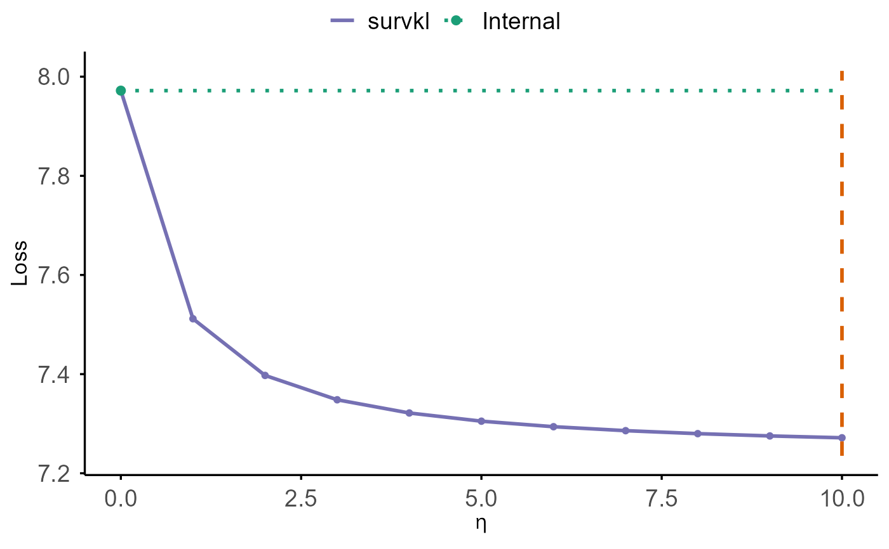

Study to Understand Prognoses Preferences Outcomes and Risks of Treatment
support.RdThe support dataset tracks five response variables: hospital
death, severe functional disability, hospital costs, and time until death
and death itself. The patients are followed for up to 5.56 years. See Bhatnagar et al. (2020) for details.
Usage
data(support)Format
A data frame with 9,104 observations and 34 variables after imputation and the removal of response variables like hospital charges, patient ratio of costs to charges and micro-costs following Bhatnagar et al. (2020). Ordinal variables, namely functional disability and income, were also removed. Finally, Surrogate activities of daily living were removed due to sparsity. There were 6 other model scores in the data-set and they were removed; only aps and sps were kept.
- age
stores a double representing age.
- death
death at any time up to NDI (National Death Index) date: 12/31/1994.
- sex
0=female, 1=male.
- slos
days from study entry to discharge.
- d.time
days of follow-up.
- dzgroup
each level of dzgroup: ARF/MOSF w/Sepsis, COPD, CHF, Cirrhosis, Coma, Colon Cancer, Lung Cancer, MOSF with malignancy.
- dzclass
ARF/MOSF, COPD/CHF/Cirrhosis, Coma and cancer disease classes.
- num.co
the number of comorbidities.
- edu
years of education of patients.
- scoma
the SUPPORT coma score based on Glasgow D3.
- avtisst
average TISS, days 3-25.
- race
indicates race: White, Black, Asian, Hispanic or other.
- hday
day in Hospital at Study Admit.
- diabetes
diabetes (Com27-28, Dx 73).
- dementia
dementia (Comorbidity 6).
- ca
cancer state.
- meanbp
mean arterial blood pressure day 3.
- wblc
white blood cell count on day 3.
- hrt
heart rate day 3.
- resp
respiration rate day 3.
- temp
temperature, in Celsius, on day 3.
- pafi
PaO2/(0.01*FiO2) day 3.
- alb
serum albumin day 3.
- bili
bilirubin day 3.
- crea
serum creatinine day 3.
- sod
serum sodium day 3.
- ph
serum pH (in arteries) day 3.
- glucose
serum glucose day 3.
- bun
bun day 3.
- urine
urine output day 3.
- adlp
adl patient day 3.
- adlsc
imputed adl calibrated to surrogate, if a surrogate was used for a follow up.
- sps
SUPPORT physiology score.
- aps
apache III physiology score.
Source
Available at the following website: https://biostat.app.vumc.org/wiki/Main/SupportDesc.
Details
Some of the original data was missing. Before imputation, there were
a total of 9,104 individuals and 47 variables. Following Bhatnagar et al. (2020), a few variables
were removed. Three response variables were removed:
hospital charges, patient ratio of costs to charges and patient
micro-costs. Hospital death was also removed as it was directly informative
of the event of interest, namely death. Additionally, functional disability and
income were removed as they are ordinal covariates. Finally, 8
covariates were removed related to the results of previous findings: SUPPORT
day 3 physiology score (sps), APACHE III day 3 physiology score
(aps), SUPPORT model 2-month survival estimate, SUPPORT model
6-month survival estimate, Physician's 2-month survival estimate for pt.,
Physician's 6-month survival estimate for pt., Patient had Do Not
Resuscitate (DNR) order, and Day of DNR order (<0 if before study). Of
these, sps and aps were added on after imputation, as they
were missing only 1 observation. First the imputation is done manually using the normal
values for physiological measures recommended by Knaus et al. (1995). Next,
a single dataset was imputed using mice with default settings. After
imputation, the covariate for surrogate activities of daily
living was not imputed. This is due to collinearity between the other two
covariates for activities of daily living. Therefore, surrogate activities
of daily living were removed. See details in the R package (casebase) by Bhatnagar et al. (2020).
References
Bhatnagar, S., Turgeon, M., Islam, J., Hanley, J. A., and Saarela, O. (2020) casebase: Fitting Flexible Smooth-in-Time Hazards and Risk Functions via Logistic and Multinomial Regression. R package version 0.9.0, https://CRAN.R-project.org/package=casebase.
Knaus, W. A., Harrell, F. E., Lynn, J., Goldman, L., Phillips, R. S., Connors, A. F., et al. (1995)
The SUPPORT prognostic model: Objective estimates of survival for seriously ill hospitalized adults.
Annals of Internal Medicine, 122(3): 191-203.
Examples
# \donttest{
data(support)
set.seed(123)
support <- support[support$ca %in% c("metastatic"),]
time <- support$d.time
death <- support$death
diabetes <- model.matrix(~factor(support$diabetes))[,-1]
#sex: female as the reference group
sex <- model.matrix(~support$sex)[,-1]
#age: continuous variable
age <-support$age
age[support$age<=50] <- "<50"
age[support$age>50 & support$age<=60] <- "50-59"
age[support$age>60 & support$age<70] <- "60-69"
age[support$age>=70] <- "70+"
age <- factor(age, levels = c("60-69", "<50", "50-59", "70+"))
z_age <- model.matrix(~age)[,-1]
z <- data.frame(z_age, sex, diabetes)
colnames(z) <- c("age_50", "age_50_59", "age_70", "diabetes", "male")
data <- data.frame(time, death, z)
n <- nrow(data)
n_ext <- floor(0.87 * n)
n_int <- floor(0.03 * n)
n_test <- n - n_ext - n_int
idx <- sample(seq_len(n))
idx_ext <- idx[ 1:n_ext]
idx_int <- idx[(n_ext + 1):(n_ext + n_int)]
idx_test<- idx[(n_ext + n_int + 1):n]
external_data <- data[idx_ext, ]
internal_data <- data[idx_int, ]
test_data <- data[idx_test, ]
library(survival)
ext_cox <- coxph(
Surv(time, death) ~ age_50 + age_50_59 + age_70 + diabetes + male,
data = external_data
)
beta_external <- coef(ext_cox)
result1 <- cv.coxkl(
z = internal_data[, c("age_50", "age_50_59", "age_70", "diabetes", "male")],
delta = internal_data$death,
time = internal_data$time,
beta = beta_external,
stratum = NULL,
etas = seq(0, 10, by = 1)
)
#> Warning: Stratum not provided. Treating all data as one stratum.
cv.plot(result1)

# }